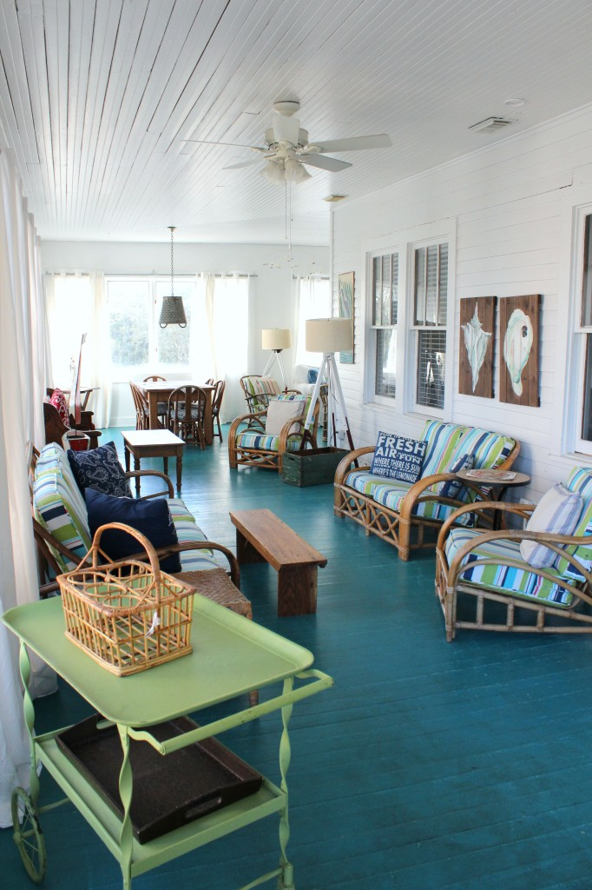
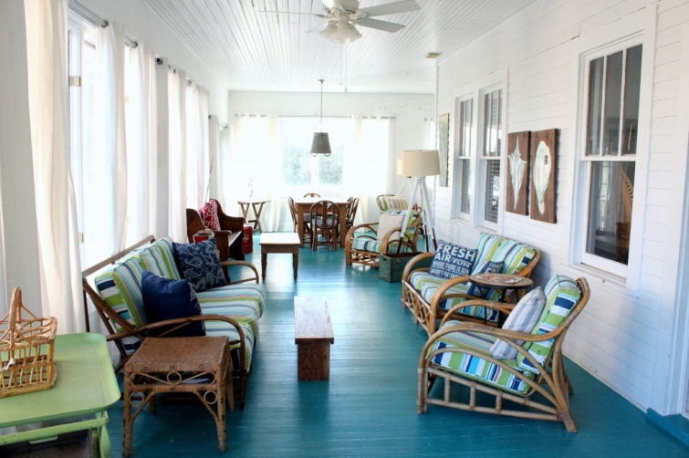
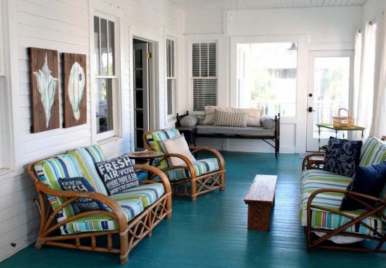

.png)
.PNG)
.PNG)
.PNG)
.PNG)
.PNG)
.JPG)
.JPG)
.PNG)
.PNG)


I have saved one last interior room and a few outside spaces for the final part of our tour of Ebbtide…the big beach house that writer, Mary Kay Andrews and her family renovated on Tybee Island.  As if the living and dining spaces weren’t enough eye candy, just look what they did with this huge glassed in porch. (I don’t need the rest of the house.  This room alone will do for me. 🙂 )

This porch is an L-shaped room. Â You can enter it from the living room or from that exterior door that you see in the photo below . Â It is also accessible from one of the bedrooms.

The folding daybed down at the end was purchased for a mere $10 at an estate sale in Atlanta.
 The bolster was made from vintage French grain sack fabric. Â The mattress is covered in ticking that was also purchased at an Atlanta estate sale…about15 years ago. Â Mary Kay said there must have been 100 yards on the bolt of fabric, and she has used it everywhere!
The bolster was made from vintage French grain sack fabric. Â The mattress is covered in ticking that was also purchased at an Atlanta estate sale…about15 years ago. Â Mary Kay said there must have been 100 yards on the bolt of fabric, and she has used it everywhere!
On the other end of the L-shape you find a table with chairs and ….yes!…another seating area.
There is a vintage tablecloth on the table – which is just perfect for Ebbtide, and I think that super comfy white sofa is the best place in the house for curling up with a good book (perhaps the new MKA book, Save the Date, when it releases in June! 🙂 )
I just had to get a closer shot of that metal dollhouse. Â It is exactly like one I had as a child long ago in the dark ages.
Here is a peek inside the rooms of the dollhouse. (I bet that dollhouse of mine was the beginning of my home decorating obsession interest. 🙂 )
Would you believe the gorgeous porch floor was already painted that perfect seashore blue when they purchased Ebbtide? Â What luck!
And isn’t this vintage sign great?! Â It was a Craigslist find in Atlanta. Â Mary Kay had to meet the seller in the parking lot of a local Target store to make the deal. (Totally worth it, I would say!)
 Now let’s wander outside on the deck. Â You can’t really tell from the photo, but you can get a view of the ocean from there.
Now let’s wander outside on the deck. Â You can’t really tell from the photo, but you can get a view of the ocean from there.
Now go back through the porch and out the door by the daybed.  This sweet little red table and chair set is waiting for you to enjoy your morning coffee there – or perhaps a Coke. 🙂Follow the steps down to the lower level.  There is a sandcastle painted wall in the parking area. Only at the beach….
Now go out the side door of the garage, and you will find this patio area…with its wicker seating from various estate sales and Scotts Antique Markets…
and Gladys the glider who looks sooo much better now that she has been cleaned up, painted with some navy spray paint, and dressed in blue ticking stripe cushions via Alison Seeger Slipcovers.
There is another area with a picnic table around the corner from this seating, but I did not get a photo of it because we were in a hurry to go out to dinner that night. Â (I’ll tell you about our dinner in another post…oh my goodness it was delicious!!)
Before I finish this final post on Ebbtide, I wanted to remind you to leave a comment on this post (and on the previous 2 posts if you’d like) to be entered in the drawing for three of Mary Kay Andrews’ books (one of which is autographed) and a couple of other goodies from Tybee Island. Â You can find all the details here.
**UPDATE: Â Giveaway closed on 4/16/14. Â Winner was announced on 4/17/14. Â Congratulations to Paula B.!
Okay, now it is time to bring this tour to an end.  I hope you have enjoyed it as much as I have. A BIG thank you goes to Mermaid Cottages for all their work in keeping these vacation homes available for everyone to love, and to the talented Mary Kay Andrews (whose real name is Kathy Hogan Trocheck) for creating a home that is the perfect escape-from-reality beach house.  I truly was in House Heaven there. 🙂
Are you ready for  an escape?  You are only one house back from the boardwalk to the beach.
Early the next morning I photographed our walk down to the water. Â Come with me…
These are the views in the early morning sunlight.
The boardwalk ends. Â We step onto the soft sand. Â At the end of a short path, this is quietly calling for us.
Have a seat. Â Soak in the sights, scents, and sounds of the ocean.
Wish we were there…


.PNG)
Kelly,
The glassed in room is my favorite room of Ebbtide thus far! All those sweet green touches here and there! My aunt had the exact same doll house and I used to get to play with it whenever I went to my Grandma and Papa’s house. I miss them so much but thank you so very much for bringing the memories of their home back to me through that doll house! I had forgotten about it and all the fun I had playing with it. The walk down to the beach looks so wonderful! I could sit on that swing all day. I just adore the beach! The sights, sounds, smells oh how amazing! Mary Kay Andrews’ beach house is so well decorated and inviting. Thank you for sharing it with us.
What a coincidence. I just started reading MKA and am now hooked! Her beach home looks so comfortable and inviting. I would love to explore Tybee Island some day.
Bucket List! Great post and pics. We have been looking at this place for quite some time!
What an awesome place to get away! Would make for a wonderful vacation with my grandchildren!!! Your photos are wonderful – thanks for sharing.
What a great place to vacation! We just got back from Hilton Head but I have to say that Tybee is calling our name.
My grandma had a glider very similar to the one at Ebbtide. She and I spent many an hour taking ‘trips’ on that piece of metal. 🙂
It makes me feel nostalgic! I also really like the Icee art, the gorgeous color of the porch floor, and the beautiful ocean view. So glad you were able to take such a special Spring Break trip!
Thanks, Kelly, for taking us along to Tybee Island – what a beautiful place. I have not read any of Mary Kay Andrews books but will definitely put them on my “books to be read” list.
What a lovely introduction to Ebbtide! And to this blog…I never thought of following one until I read MKA’s novel ‘Ladies Night.’ The whole connection of writing, beaches, and houses is my passion. Thank you Kelly for bringing it all “home” for me.
I always enjoy a little trip to the beach on your blog! (I received that “Fresh Air” pillow from our “thrift store Christmas” with friends this year and can’t wait to put it in my happy place.) I love how a little bit of vintage really makes a place seem like home and adds character….like your Bingo cage and the VW bus. Your photos of the beach in the early morning were captivating! I expect to see those scenes in just five days!!!
So happy you stopped by my blog, because now I found you! What a fun coincidence . . . I stayed at Ebb Tide in February! Isn’t it fabulous? Your photos were WAAAAYYY better than mine. I was having camera malfunction that week, or else I think I would have had about 87 posts about the Mermaid Cottages we toured.
I know you had a fabulous time, and I’m so glad I found your beautiful blog!
Lovely retreat for a writer of wonderful books!
I can almost feel the sand between my toes, and the smell of the ocean…..thanks for the escape.
Jeanne
MKA is as talented of a beach house redecorator as she is a writer….. thanks for the great tour. It took me back to the lovely week my family and I spent on Tybee last June. I can’t wait to go back now!
Loved this trip to the beach with you. The beach house is absolutely wonderful. If you stayed there a week you wouldn’t have time to enjoy all of the special little areas you’ve shown! Looking forward to our trip later in the year.
Kelly, what a wonderful three day tour of this amazing beach home I had so much fun like being there on the tour with you! I love the colors of the home so refreshing, bold, and just plain fun (coke table and chairs, painted sand castles, and the pillows on the couch I have two just like them on my bed!)..thank you again for such a wonderful time and the sunrise the next day…gorgeous!
Going to Tybee in June. I can’t wait.! While I wait for summer vacation, I will just have to keep looking at pictures . Thanks for providing these beautiful photos.
What a fun cottage she has created. I love all the colors in her home. That doll house is just precious. Everything about this home reminds me of what staying at the beach is really supposed to be COMFORTABLE!
I’m so enjoying the guided tour through Ebbtide Cottage. What a charming place! I think I’d spend every waking hour on one of those great porches/patios listening to the ocean.
Kelly, on a totally different note, I’d love to know the paint color you used for the siding on your home. We’re building a home & I’m in the process of picking roof, windows, & exterior paint colors. The color you used looks so natural & I really like how it flows with the landscape.
Love your blog! Thanks so much!
My favorite thing is the vintage doll house……I still have mine in the attic thinking about pulling it out and displaying it. Pick me
The doll house is just like the one I had, too! Wish I still had it!! Also, frozen cokes are my favorite drink ! The blue painted floor was my favorite thing— I think the sea is calling my name!! Thank you for a wonderful look back and some great ideas to think about in decorating. A rain storm just went through and now the cleanest smelling breeze, damp earth —with cardinals singing and Carolina wrens chattering. Feeling blessed and refreshed!:)
Kelly,
What a great house. Wouldn’t it be fun to own a house that all of your family and friends could visit to recharge their batteries? It’s so inviting. I’m sure you and your family had a memorable time.
xo,
Karen
Kelly, I love going on these jaunts with you. The dollhouse really spoke to me in this one. Brought back lots of memories of one I played with as a child. The boardwalk is another thing that stirred memories of the beach, the sand, the sound of the surf and gulls, the wind through the sea grass. Even the sound as you walk on the boardwalk. Isn’t wonderful how those memories can be brought back just through your beautiful pics. Like a trip back in time. Thanks for the journey.
I NEED the green cart that was on the porch. And the floor – swoon! This makes me long for outdoor sitting. It is currently snowing in my area…:(
We discovered Tybee Island 2 years ago and have stayed each summer. Such a wonderful place for a vacation. So laid back and comfortable. Just found your blog and am sharing with others that I know will enjoy as much as I do. Thanks.
I love the colored floors on all the porches. That little detail makes so much difference. And I had a similar dollhouse too!
What an awesome porch. WHo needs the house??? Have a blessed Easter.
Love the porch area. I think I am changing my mind on my favorite room/area now. I am grabbing a cup of coffee and walking the beach in my mind at least. How wonderful. Sigh! We just received another dose of snow yesterday. Ugh! Thank you Kelly for this wonderful post and beach escape, if only in my mind. Early Easter Blessings and warm thoughts your way Kelly.
Debra
I see my tray sitting on the green cart. I have the same one and put a white lace place mat inside. I can picture myself relaxing here. 🙂
Oh. That little doll house! I too, had one….and have come across them, but never knew what I would do with one. NOW I know!!
I would love to read Mary Kay Andrews books while I’m vacationing at Ebbtide beach house! I would have my morning coffee on that fabulous deck with the blue floor; it looks so relaxing out there. I would then take a morning walk down the boardwalk and go sit on the fabulous swing…for hours! lol
After a swim and walk along the beach picking up seashells…I would have some southern sweet tea in the downstairs patio area with the wicker furniture. I would test out all the seating 🙂
Ahhh, I could go on and on…what a wonderful place! Thank you for taking us there along with you. This house is perfect for a family reunion too!
I have really enjoyed how you did your blog for Tybee. I loved looking at all the pictures and reading about the owner/author and her treasures and finds; how they really make this place come together.
Thanks for saving the best for last. The porch was my favorite. I could just sit on that porch forever. Looks like a good place to grab a book, glass of wine and sit back and chillax. I can’t believe you were able to tear yourself away to leave. I think I would have been depressed going home. Then again if I had your home I might not of. Your home is equally as beautiful. I believe the enjoyment of my evenings has now become to come home and go to your site to see what you have for me for the day. Thanks again for sharing.
I have so enjoyed this series! I don’t think there is anything in this house that I don’t love! I could settle down on that porch and wile away many, many hours while reading one of Mary Kay’s books.
Oh so needed these beautiful cottage pictures this morning and the ocean view. Here in Ohio it’s snowing. Poor robins probably wish they would have stayed down South another month. Thank you for sharing Tybee Island. It’s on my bucket list!
I want that vintage doll house Kelly!! And the rest of the house at Ebbtide. Wouldn’t that be a treat?? As for Tybee, I have spent many peaceful (and some not so peaceful!) hours there. Those swings are one of my favorite things. I always tell Marvin that we have to SWING.
I had that metal dollhouse, too! Oh, how I wish I still had it! I have really enjoyed this series.
Just love everything about this cottage!
My SIL often vacations at Tybee Island; your photos make me want to tag along on one of her trips! Ebbtide is beach house perfection!
Thank you for taking your readers along with you on this wonderful vacation.
I have enjoyed viewing every room in the cottage and they are so wonderful. I had a dollhouse similar to the one in the photo as well. The last pictures of the walk to the beach and the swing gave a few moments of calm before I begin my day. I definitely need some sand in my shoes and salt air.
I have enjoyed the visit through your eyes and camera to this wonderful vacation house! Just last week, my friend, Jean, and I were talking about Mary Kay Andrew’s books, I had not read them. After seeing your post, I’ve shared it with her and have drooled over the first two posts and I can hardly wait to get together to talk about this one. You do a fabulous job! I have a soft spot in my heart for gliders and the blue ticking!
Just seeing the beach and warmth of the sun and sand makes me jealous. Woke up to 3 inches of snow on the ground here in Michigan! Enjoyed the tour, cute cottages! Thanks, Kelly.
I love this whole house, but I think the porch would be my favorite spot too. Thanks for giving us the grand tour. I’m looking forward to hearing about where you ate also. Next to houses, food is my next favorite thing. Or maybe it’s the other way around. 😀
Oh Kelly, no wonder you were checking out real estate pamphlets when you left Tybee!! Love this house, this beach path and it’s wooden swing but best of all I love that you got to enjoy it over your break!!!! My husband and I are chaperoning ( maybe a better word is herding) 60 three year olds at an Easter egg hunt today at a local retirement center! The residents hid 1200 eggs! Oh and did I mention it is supposed to rain all day…. You know, those sweet little three yr olds will never even notice!!! Have a great day, Kelly!!
I love this cottage and hope to visit someday. My grandparents had a glider like the one shown. We spent lots of evenings hanging out on their porch when the weather allowed. Brings back memories!
omg….the dollhouse, the tablecloth…blue floor…..coke sign…..ocean….after this most wonderful tour of Tybee Island, I told my husband that is one place I want to go before I die….thank you, thank you, thank you so much for sharing…..your awesome too !!!!!!!!!!!!
How gorgeous is that porch floor? Oh my, I could feel myself exhaling just looking at the photos! I can only imagine how wonderful to actually visit. Sigh, one day!
Can I just say that I love the daybed…and $10? Wow. What a great series Kelly. Thanks for sharing all of these lovely pics.
K.
Such fun. Two things: 1)I still have my metal dollhouse like the one at Ebbtide(mine is white and red not white and green) and 2)The sun seems to be rising all wrong. Here in CA the sun sets over the ocean which is opposite than the East. So for me the photo doesn’t say morning but evening-lol.
I may just have to rent this place so I can visit the metal dollhouse. I had one very similar to that. I wish I still owned it.
As usual, Kelly, a delightful post. Your photos are perfect. Thank you so much for giving us a glimpse into Ebbtide. I wish I were snuggled in that comfy white couch with a good book right now;
Hugs
Cath (from Calgary, Alberta, Canada)
P.S. You are very popular with many people… all over the world!